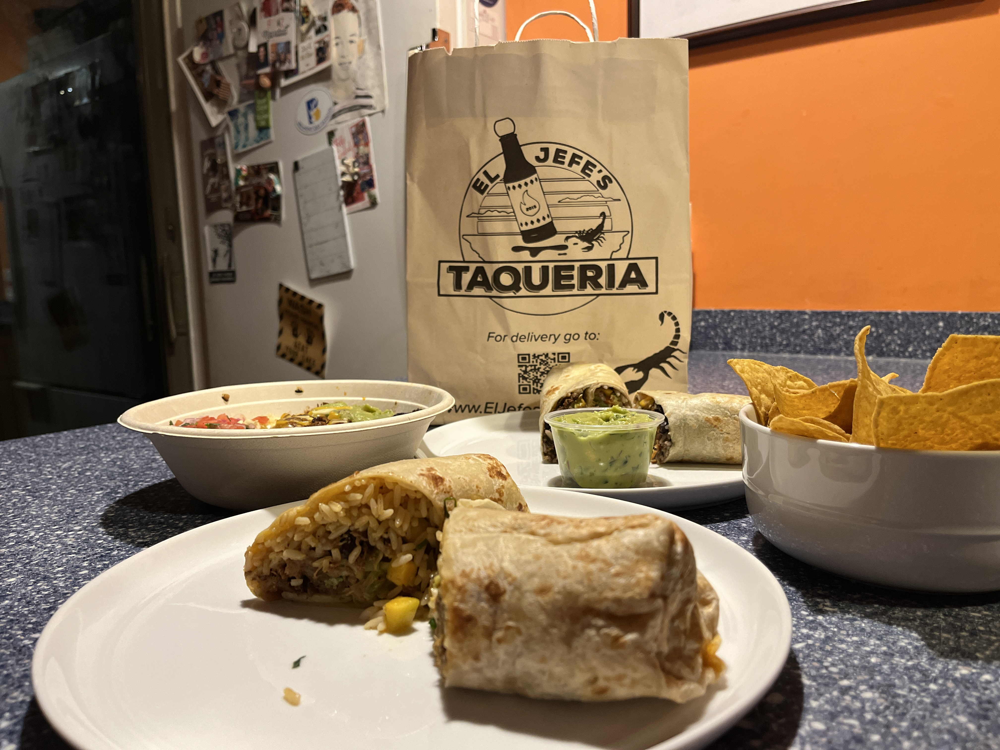
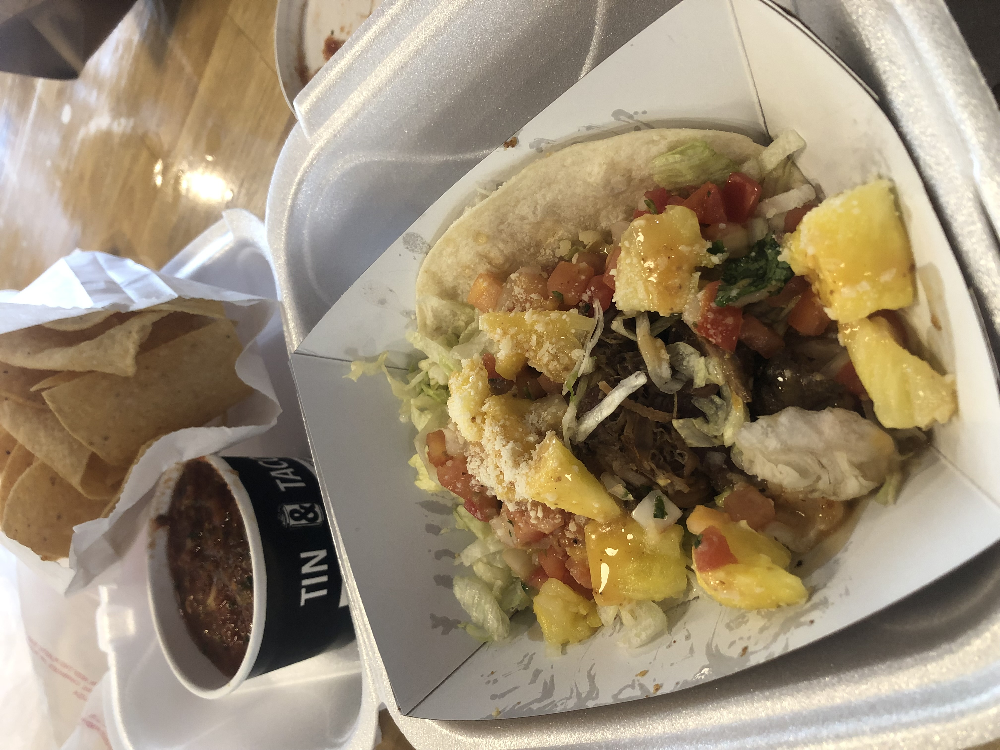
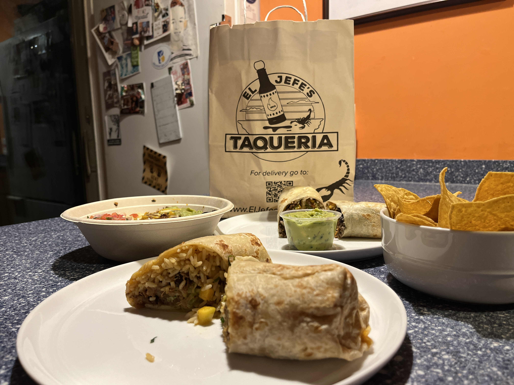
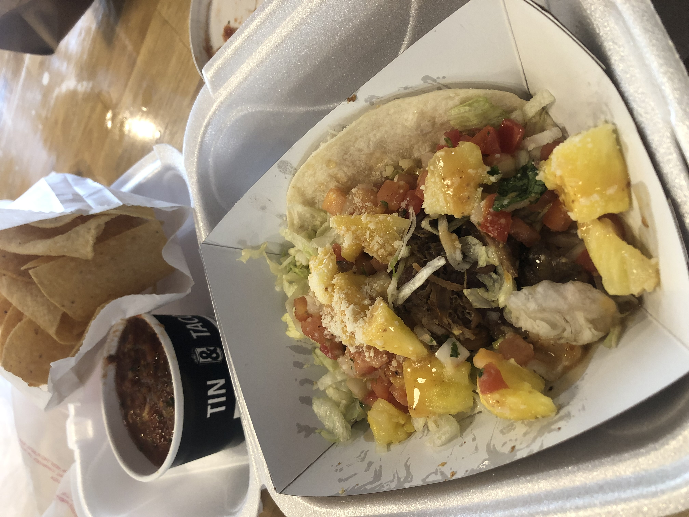
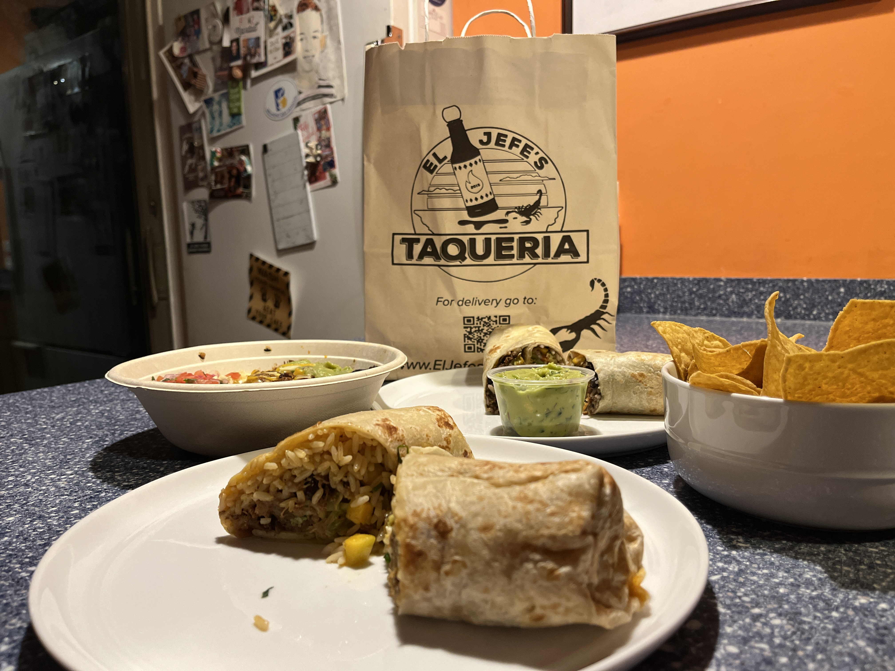
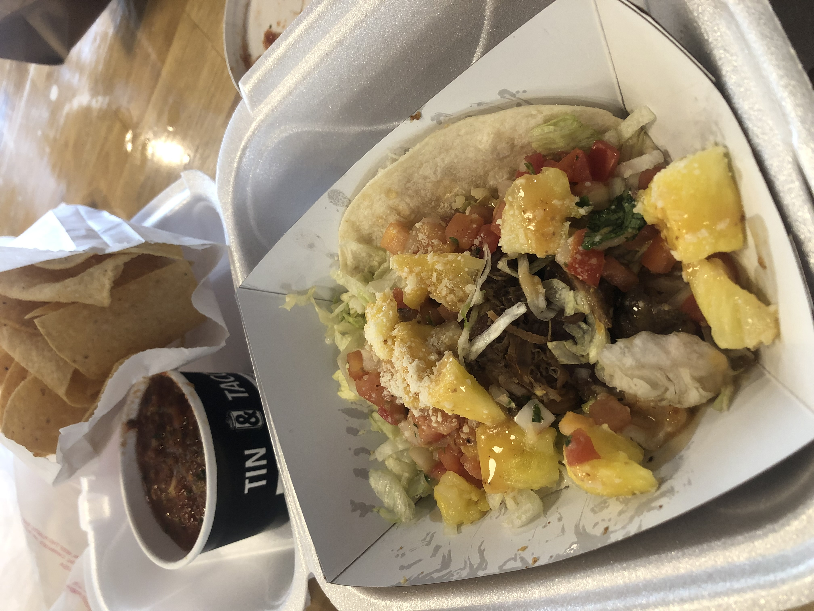
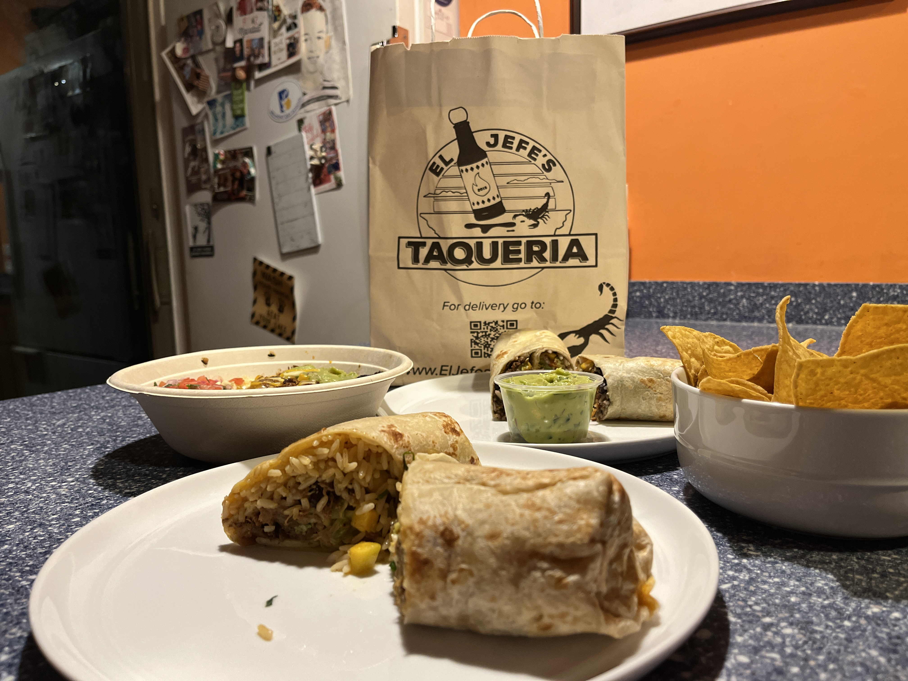
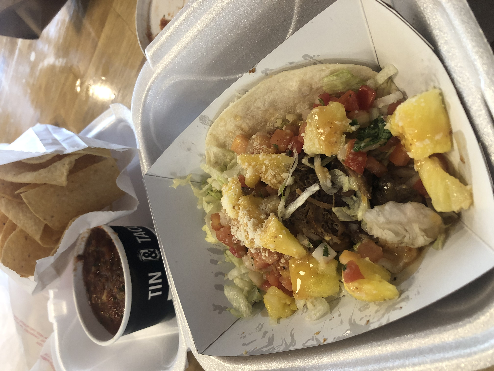

In case you were wondering how Taco Finder started, yes it's my capstone project, but it also represents my love for food.
As you've probably gathered, I love tacos, but what you might not know is that I also love tecnnology.
I had to find a Capstone project that would combine these two areas, and so I started working on Taco Finder.
I spent time learning new skills and coded Taco Finder from scratch using 539 lines of HTML, 1011 lines of CSS, and 370 lines of JavaScript. I also ate many tacos along the way!
What are some of those skills you might ask?
Well, I had to wear a lot of different hats during my Capstone journey including:
First stop on my Capstone journey was to learn about how Mexican Cuisine started and how it has evolved.
I wrote a paper titled Tacos Crossing the Border: How Has Mexican Cuisine Conquered America?
You can read it here.
If you want some quick facts, feel free to read about food origins here.
During the project phase, I had an awesome interview with Mr. Schall.
He is currently the owner of El Jefe's Taqueria and was the owner and founder of Fire and Ice

As part of the project phase, I also conducted a survey among the BDS community, gathering insights from faculty and students.
A lot of the findings from this survey helped me prepare for my interview with Mr. Schall and helped inform my presentation
In care you're curious what makes the perfect taco for the BDS community:
For me, the perfect taco is more than what's on the plate.
Yes, I will forever love carnitas and guacamole, but it's also the atmosphere and the people you are surrounded with that make every bite count.
I invite you to grab some friends and find your perfect taco with Taco Finder.